Good coffee, music quiet enough to talk over, and the corner table where Latte with Lata is recorded. 27 Bellwood Street, Harrowfield.
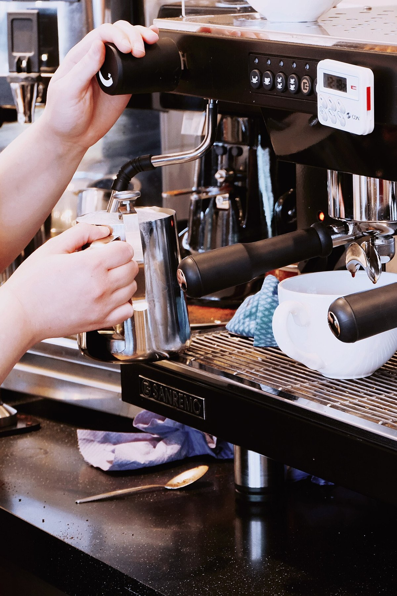
Our story
FROM FIRST POUR TO LAST WORD
The cafe opened in the spring of 2024 with a second-hand espresso machine, a borrowed oven and one rule: the music stays quiet enough to talk over.
The talking turned out to be the point. By autumn there were microphones on the corner table, and leaders from clinics, councils and charities were coming in to say what they could not say at a podium.
The microphones were not part of the plan. One Thursday a food bank director stayed past closing to talk through a decision she could not raise at her own board table, and the tables around her went quiet to listen. The week after, people came back for the next conversation.
So the chairs were turned to face the corner. Two second-hand microphones arrived in a shoebox, then a small mixer, then a lamp, and Latte with Lata had a home. Nobody has asked for the corner table back.
It is still a cafe first. Most of the week the corner table is just a table, and the room belongs to anyone who wants a good coffee and an unhurried conversation. On Thursday nights it is where someone with a hard job says what it actually took.
The machine has since been replaced. The rule has not.
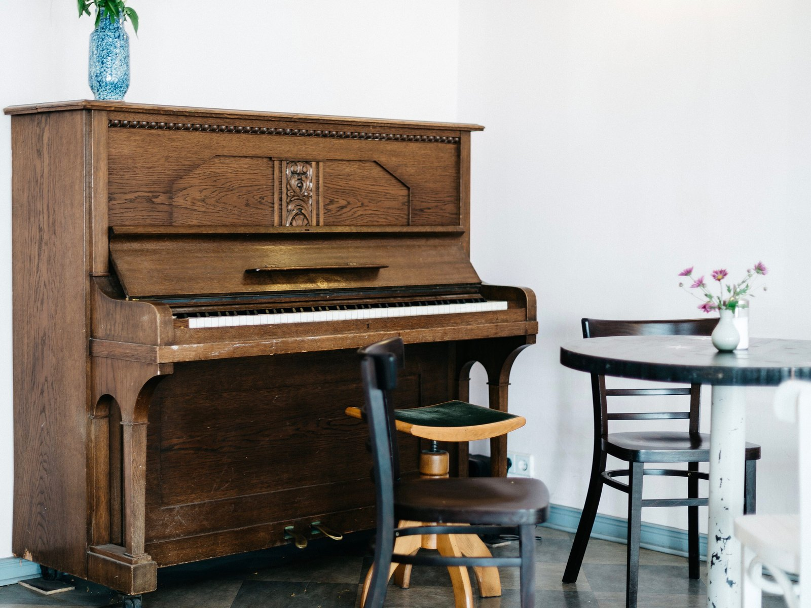
How we run the place
WHAT WE CARE ABOUT
Four things. None of them are complicated. All of them cost a little more than the alternative.
Coffee from two streets over
Our beans come from a small roaster two streets away. We buy what they are roasting that week, so the filter coffee changes with it. It is fresh, the supply line is a short walk, and there is someone to talk to when a bag is not right.
02
A kitchen that does breakfast properly
Eggs cooked to order. Croissants baked at six. Porridge that was started before you woke up. The kitchen is small, so the menu is short. We would rather do a dozen things well than thirty things quickly.
A room built for talking
No speakers over the tables. Soft surfaces, quiet music and chairs you can sit in for an hour. If you cannot hear the person across from you, we have done something wrong.
04
A living wage for the team
Everyone who works here is paid at least the local living wage, and tips are shared evenly across the shift. It adds a little to the price of a cup. We think that is the right price.
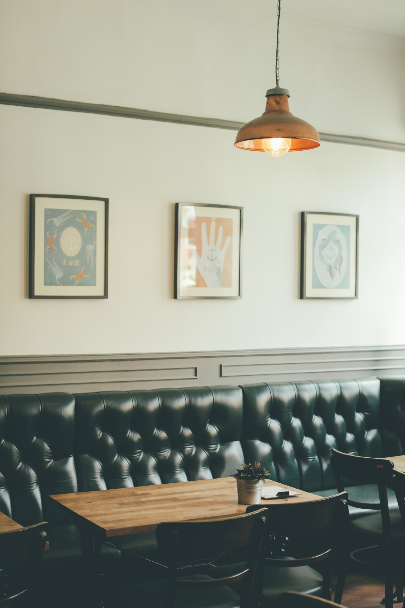
The room
SEATS ABOUT FORTY
The room seats about 40. There is a long bench under the window, a dozen small tables, four stools at the counter and a few tables outside under the awning.
The corner table is the one with the microphones. Most of the week it is the best seat in the house for two people and a long conversation. On Thursday nights the other chairs turn to face it.
Order at the counter and find a seat. We bring everything to you.
Seats
About 40 inside, 8 outside
The corner table
Seats 4. Yours any day but Thursday night.
Wifi
Free. Ask at the counter.
Payment
Card, contactless and cash
Getting in and getting comfortable
Step-free entry from Bellwood Street
Accessible toilet on the ground floor
High chairs and a baby-changing table
Dogs welcome at the outside tables, with a water bowl by the door
Assistance dogs welcome everywhere
Large-print menus at the counter
If something would make your visit easier, tell us when you book or call ahead. We will do what we can.
Around the room
A LOOK INSIDE
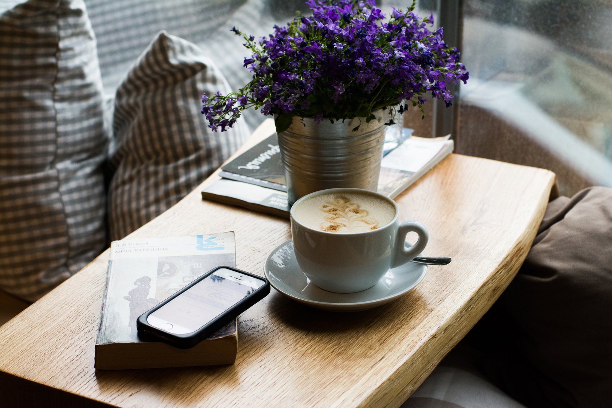
The window bench. Best light before ten.
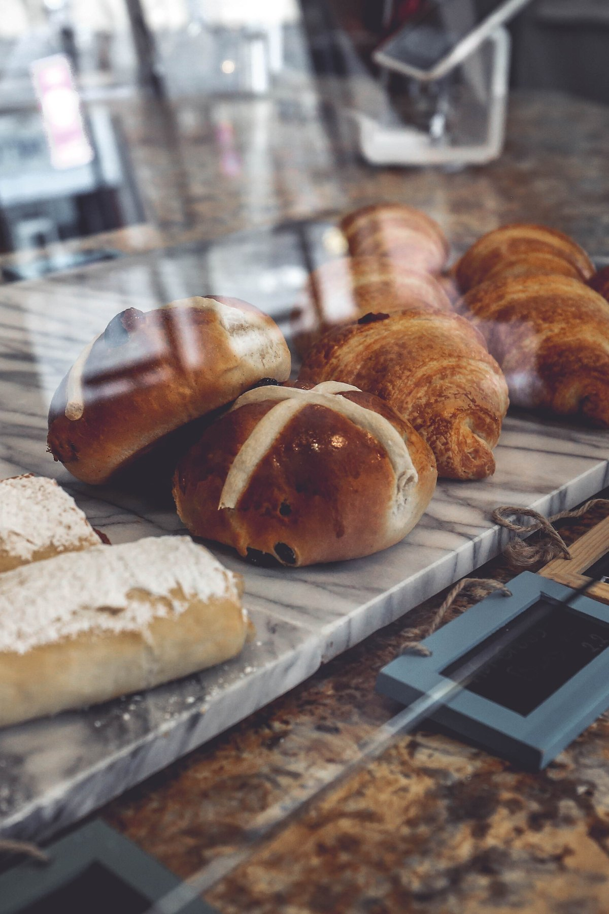
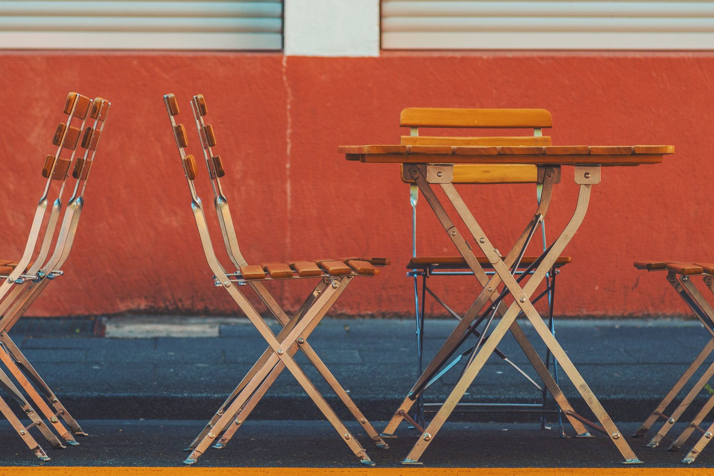
Outside on Bellwood Street. Dogs welcome.
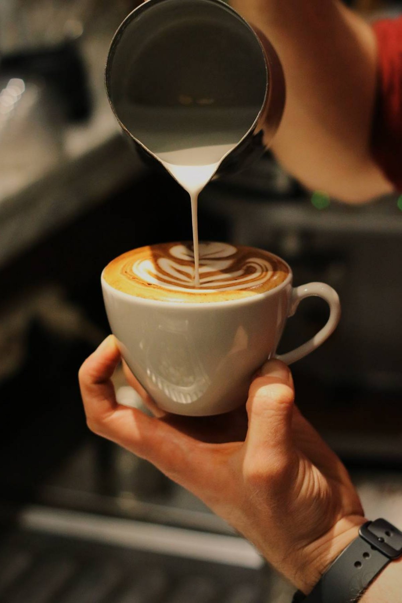
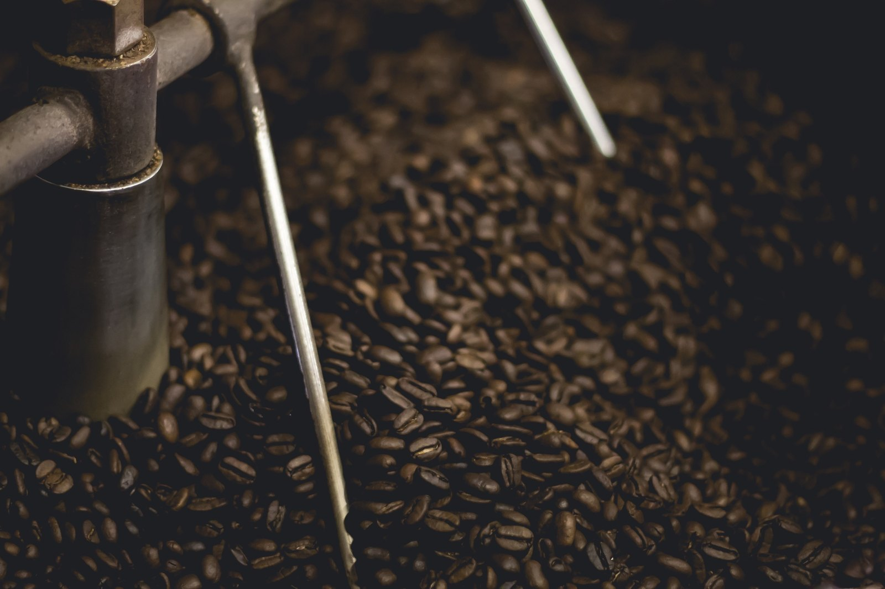
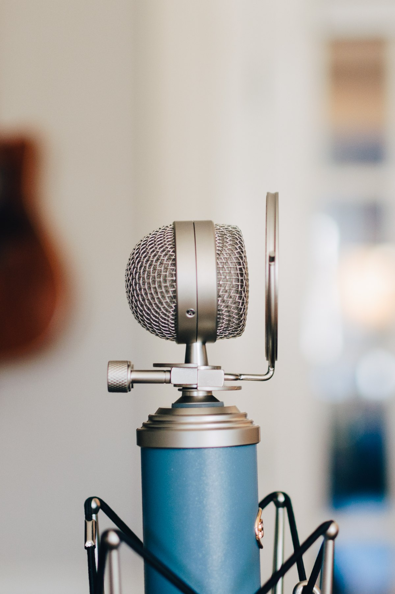
The counter. Order here, then find a seat.
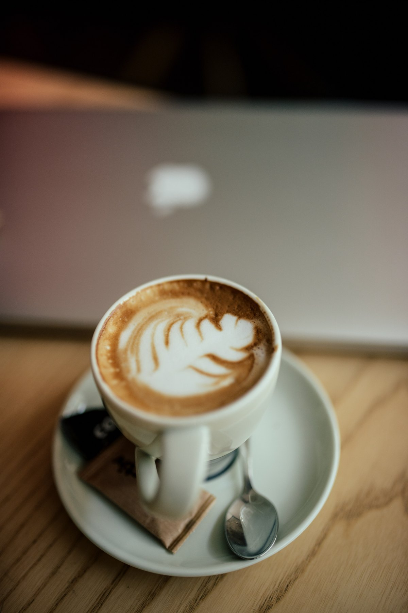
The corner table. Most of the week, just a table.
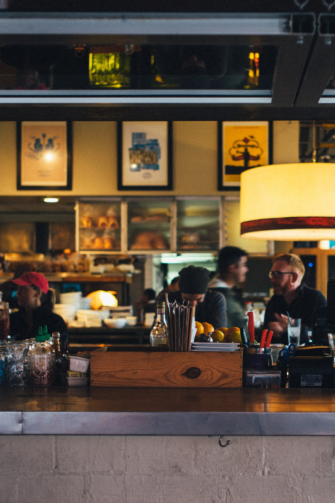
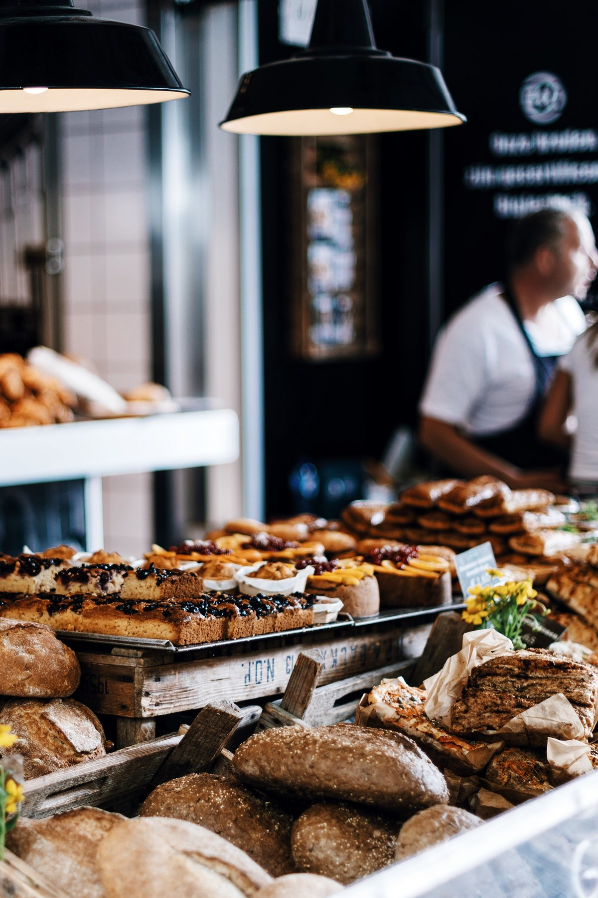
Good to know
QUESTIONS PEOPLE ASK
Can I work here on a laptop?
Yes, on weekdays. The wifi is free and there are sockets along the window bench. At weekends between 10:00 am and 2:00 pm we ask you to keep laptops closed so the tables can turn.
Can I bring my dog?
Dogs are welcome at the outside tables, and there is a water bowl by the door. Inside, assistance dogs only.
Is there room for a pram?
Yes. The entry is step-free and there is space to park a pram by the window bench. We have high chairs and a changing table. When the room is full we may ask you to fold it.
Do I need to book?
No. We always keep some tables for walk-ins. If you want to be sure, book online. We hold a table for 15 minutes and sittings are 90 minutes. For more than 8 people, call or email us.
Tell us when you order. The menu marks vegetarian, vegan, gluten-free and dairy-free dishes and anything that contains nuts, and the kitchen will talk you through any plate. It is one small kitchen that handles nuts, gluten, dairy and eggs, so we cannot promise a dish is free of traces.
Yes. The room is available on Monday, Tuesday and Wednesday evenings from 6:30 pm, for up to 40 seated. Write to us with your date and numbers and we will reply within 2 working days.
7:00 am - 6:00 pmReopens 6:30 pm for the recording
Fri
7:00 am - 10:00 pm
Sat
8:00 am - 10:00 pm
Sun
8:00 am - 3:00 pm
Thursdays we reopen at 6:30 pm for the recording. Free, first come first seated, and the guest stays for a coffee afterwards.
Stay for the conversation
The conversation doesn't end with the podcast. Follow along for meaningful moments, leadership insights, guest stories and upcoming conversations. One email a week, never more.